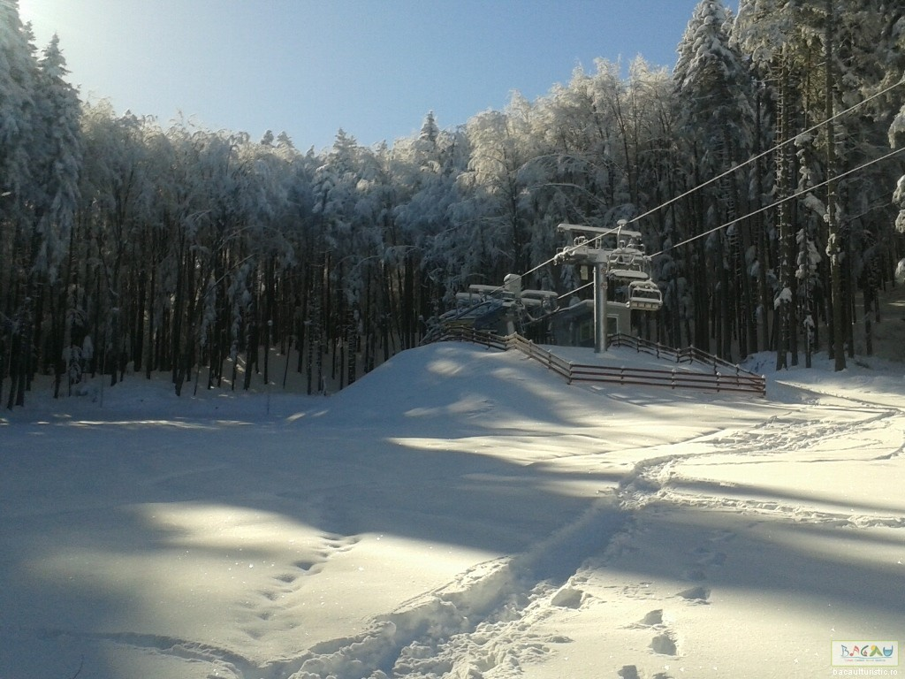
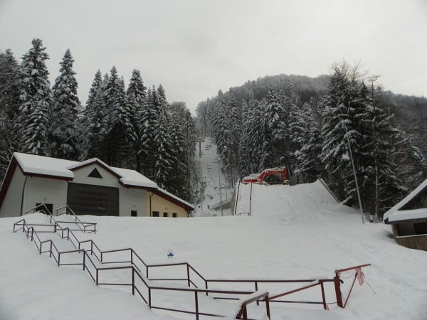

Partia de schi Nemira este amplasata la intrarea in statiunea Slanic-Moldova (jud. Bacau), in imediata apropiere a DN12B si are o traiectorie cu orientare spre nord, fiind situata la altitudinea maxima de 724, 54 metri (baza superioara) si altitudinea minima de 484, 92 metri (punctul de plecare).
Are o lungime pe inclinare de 1.414 metri, latime medie de 38 metri , o diferenta totala de nivel de 240 metri si o panta medie de 17%, inclinatie ce o incadreaza in categoria partiilor usoare si, implicit, ii confera partiei un grad de atractivitate deosebit de ridicat.
Pentru asigurarea unor conditii optime de practicare a schiului si pentru a veni in intampinarea iubitorilor sporturilor de iarna, partia este prevazuta cu: instalatie de transport pe cablu, instalatie de inzapezit artificial, masina de batut zapada, instalatie de iluminat pentru nocturna, parcare auto, serviciu de salvamont s.a.
 